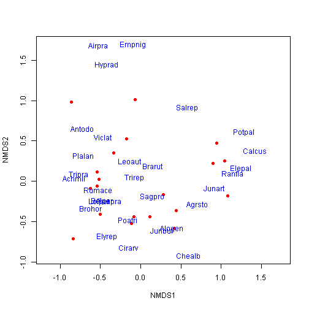
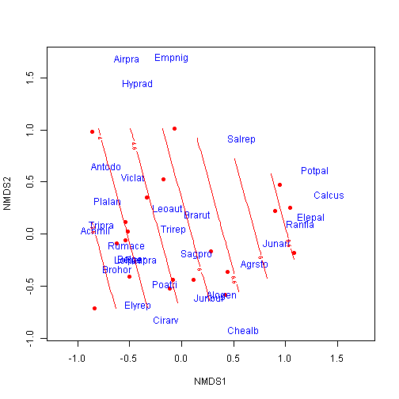
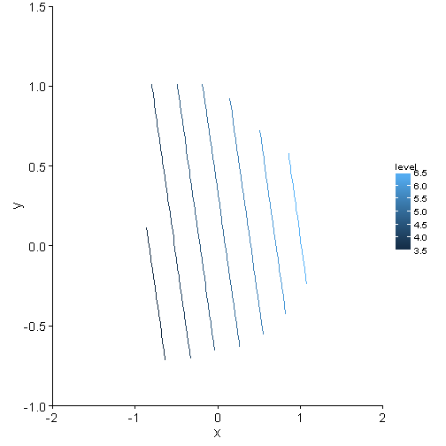
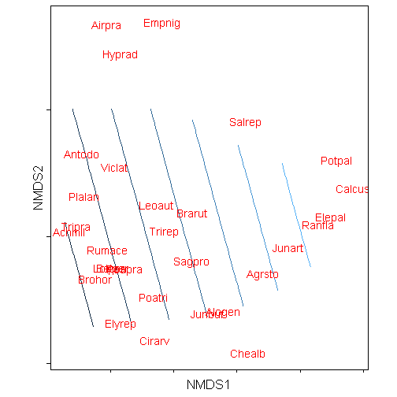
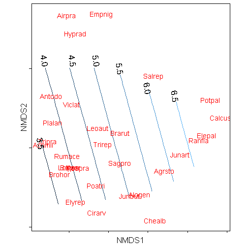
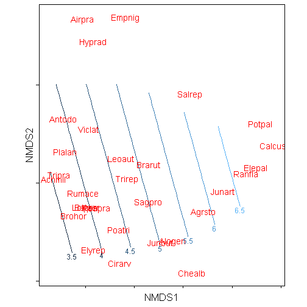

Plotting smooth surfaces on NMDS plots with ggplot
The RMarkdown source to this file can be found here
A little while back I showed how to produce NMDS plots using the vegan and ggplot2 packages. In this post, I will extend the production of the NMDS plots to reproducing the smooth surface plots produced by the function ordisurf in the vegan package.
From the documentation, ordisurf, which requires package mgcv) fits smooth surfaces for continuous variables onto ordination using thinplate splines with cross-validatory selection of smoothness.
I have found these type of plots particularly insightful in both understanding relationships in bird communities to changes in vegetation structure and to fish communities relationship with angling effort
Similar to reasons I mentioned when making NMDs plots in my previous posts, these plots look a whole lot better and easier to make publication ready using ggplots themes
ordisurf plots using base plots
Load the required libraries. For this demonstration I will use the dune dataset within the vegan package. The analysis I am showing here is based on information presented in the Vegan: an introduction to ordination vignette by Jari Oksanen
library(ggplot2)
library(vegan)
library(grid)
set.seed(123456)
data(dune)
head(dune)## Belper Empnig Junbuf Junart Airpra Elepal Rumace Viclat Brarut Ranfla
## 2 3 0 0 0 0 0 0 0 0 0
## 13 0 0 3 0 0 0 0 0 0 2
## 4 2 0 0 0 0 0 0 0 2 0
## 16 0 0 0 3 0 8 0 0 4 2
## 6 0 0 0 0 0 0 6 0 6 0
## 1 0 0 0 0 0 0 0 0 0 0
## Cirarv Hyprad Leoaut Potpal Poapra Calcus Tripra Trirep Antodo Salrep
## 2 0 0 5 0 4 0 0 5 0 0
## 13 0 0 2 0 2 0 0 2 0 0
## 4 2 0 2 0 4 0 0 1 0 0
## 16 0 0 0 0 0 3 0 0 0 0
## 6 0 0 3 0 3 0 5 5 3 0
## 1 0 0 0 0 4 0 0 0 0 0
## Achmil Poatri Chealb Elyrep Sagpro Plalan Agrsto Lolper Alogen Brohor
## 2 3 7 0 4 0 0 0 5 2 4
## 13 0 9 1 0 2 0 5 0 5 0
## 4 0 5 0 4 5 0 8 5 2 3
## 16 0 2 0 0 0 0 7 0 4 0
## 6 2 4 0 0 0 5 0 6 0 0
## 1 1 2 0 4 0 0 0 7 0 0Run the ordination on the dune dataset and plot the result with base graphics
ord <- metaMDS(dune)## Run 0 stress 0.1193
## Run 1 stress 0.1183
## ... New best solution
## ... procrustes: rmse 0.02027 max resid 0.06494
## Run 2 stress 0.1183
## ... procrustes: rmse 2.269e-05 max resid 7.575e-05
## *** Solution reached
ord##
## Call:
## metaMDS(comm = dune)
##
## global Multidimensional Scaling using monoMDS
##
## Data: dune
## Distance: bray
##
## Dimensions: 2
## Stress: 0.1183
## Stress type 1, weak ties
## Two convergent solutions found after 2 tries
## Scaling: centring, PC rotation, halfchange scaling
## Species: expanded scores based on 'dune'
plot(ord, type = "n")
points(ord, display = "sites", cex = 1, pch = 16, col = "red")
text(ord, display = "species", cex = 1, col = "blue")
Now fit continuous environmental factors from the dune.env dataset using ordisurf.
data(dune.env)
head(dune.env)## A1 Moisture Management Use Manure
## 2 3.5 1 BF Haypastu 2
## 13 6.0 5 SF Haypastu 3
## 4 4.2 2 SF Haypastu 4
## 16 5.7 5 SF Pasture 3
## 6 4.3 1 HF Haypastu 2
## 1 2.8 1 SF Haypastu 4
plot(ord, type = "n")
points(ord, display = "sites", cex = 1, pch = 16, col = "red")
text(ord, display = "species", cex = 1, col = "blue")
ordisurf(ord, dune.env$A1, add = TRUE)
##
## Family: gaussian
## Link function: identity
##
## Formula:
## y ~ s(x1, x2, k = 10, bs = "tp", fx = FALSE)
## <environment: 0x0000000015c7dac0>
##
## Estimated degrees of freedom:
## 1.59 total = 2.59
##
## REML score: 41.59ordisurf plots using ggplot
The first step is to extract the data from the ord object and put it into a dataframe. For the purpose of this demonstration, I am going to just focus on the species scores.
Notice that I add a ‘z’ column filled with NAs, which allows the score data sets to be combined with the contour dataset.
species.scores <- as.data.frame(scores(ord, "species"))
species.scores$species <- rownames(species.scores)
names(species.scores)[c(1, 2)] <- c("x", "y")
species.scores$z <- NA
head(species.scores)## x y species z
## Belper -0.47834 -0.24453 Belper NA
## Empnig -0.08858 1.69637 Empnig NA
## Junbuf 0.26483 -0.60750 Junbuf NA
## Junart 0.91148 -0.08299 Junart NA
## Airpra -0.52855 1.67980 Airpra NA
## Elepal 1.24505 0.16158 Elepal NANext step is to run the ordisurf function as above.
dune.sf <- ordisurf(ord ~ dune.env$A1, plot = FALSE, scaling = 3)
head(dune.sf)## $coefficients
## (Intercept) s(x1,x2).1 s(x1,x2).2 s(x1,x2).3 s(x1,x2).4 s(x1,x2).5
## 4.850e+00 -4.962e-06 1.084e-07 4.976e-06 1.178e-05 -1.745e-07
## s(x1,x2).6 s(x1,x2).7 s(x1,x2).8 s(x1,x2).9
## 2.924e-06 -2.379e-05 9.978e-01 2.136e-01
##
## $residuals
## 1 2 3 4 5 6 7 8 9
## -0.3474 0.7280 -0.2302 -0.8285 0.2823 -0.3654 -1.0333 2.5075 0.1111
## 10 11 12 13 14 15 16 17 18
## 5.0940 -0.7213 -0.9555 -1.1335 -0.1942 -0.2218 -3.1576 2.7045 -1.4852
## 19 20
## 0.3919 -1.1455
##
## $fitted.values
## 1 2 3 4 5 6 7 8 9 10 11 12
## 3.847 5.272 4.430 6.528 4.018 3.165 5.233 3.793 3.889 6.406 4.021 4.456
## 13 14 15 16 17 18 19 20
## 4.833 4.794 4.522 6.658 6.596 5.185 5.408 3.945
##
## $family
##
## Family: gaussian
## Link function: identity
##
##
## $linear.predictors
## 1 2 3 4 5 6 7 8 9 10 11 12
## 3.847 5.272 4.430 6.528 4.018 3.165 5.233 3.793 3.889 6.406 4.021 4.456
## 13 14 15 16 17 18 19 20
## 4.833 4.794 4.522 6.658 6.596 5.185 5.408 3.945
##
## $deviance
## [1] 58.68We need to extract the contour information from dune.sf object. This is in the $grid. I wrote a function that will pull out this information and put it into a dataframe with the column headers ‘x’, ‘y’, and ‘z’.
extract.xyz <- function(obj) {
xy <- expand.grid(x = obj$grid$x, y = obj$grid$y)
xyz <- cbind(xy, c(obj$grid$z))
names(xyz) <- c("x", "y", "z")
return(xyz)
}
contour.vals <- extract.xyz(obj = dune.sf)
head(contour.vals)## x y z
## 1 -0.8603 -0.716 3.133
## 2 -0.7956 -0.716 3.238
## 3 -0.7309 -0.716 3.343
## 4 -0.6662 -0.716 3.449
## 5 -0.6015 -0.716 3.554
## 6 -0.5368 -0.716 3.659We now have the required information to reproduce the plot from ordisurf in ggplot2. The first step is the lay down the contours in the plot.
p <- ggplot(data = contour.vals, aes(x, y, z = z)) + stat_contour(aes(colour = ..level..)) +
coord_cartesian(xlim = c(-2, 2), ylim = c(-1, 1.5)) + theme_mine()
print(p)## Warning: Removed 156 rows containing non-finite values (stat_contour).
Then add the species scores. Note that I am using theme_mine which can be sourced from my themes.r file
p <- p + geom_text(data = species.scores, aes(x = x, y = y, label = species),
colour = "red") + coord_equal() + theme_mine() + labs(x = "NMDS1", y = "NMDS2") +
theme(panel.border = element_rect(fill = NA), axis.text.x = element_blank(),
axis.text.y = element_blank(), legend.position = "none")
print(p)## Warning: Removed 156 rows containing non-finite values (stat_contour).
Adding contour labels
The trickiest part of reproducing the contours is getting the contour labels on the lines. I usually manually create a data.frame and manually set the points that I want the labels.
labelz <- data.frame(x = c(-0.85, -0.8, -0.45, -0.15, 0.15, 0.5, 0.85), y = c(0.05,
1.1, 1.1, 1.1, 1, 0.75, 0.65), z = NA, labels = c("3.5", "4.0", "4.5", "5.0",
"5.5", "6.0", "6.5"))
p + geom_text(data = labelz, aes(x = x, y = y, label = labels), angle = -80,
size = 6)## Warning: Removed 156 rows containing non-finite values (stat_contour).
The other option is to take advantage of the directlabels package and utilize the function direct.labels().
library(directlabels)
direct.label(p)## Loading required package: proto## Warning: Removed 156 rows containing non-finite values (stat_contour).
## Warning: Removed 156 rows containing non-finite values (stat_contour).
As I have demonstrated that the key to using ggplot2 to produce plots is to get the relevant data in a data.frame. Once you get it into that format, generally, it is then easy as pie.